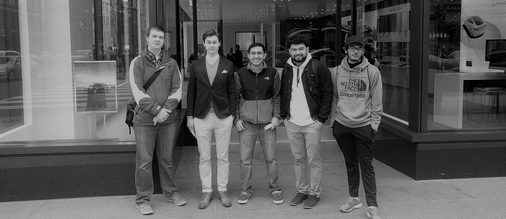

The D.C. Experiment
Network. Observe. Innovate.
The ignorant entered. The enlightened returned.
Meet the Team
The team in front of Tesla Moters. Shawn is our photographer.
Washington, D.C.
By ShawnSo we went into the church of Scientology, and it was like I walked into a different dimension. I was bombarded with new ideas and ideals. The people who talked to me sounded like they had practiced this speech a thousand times. It was a revealing encounter. It was new, and they claimed that they could show me who I was meant to be. I was led into a room with a projector, offered food and refreshment. I was then shown thirty minutes worth of videos like the one above. The visit lasted for 2 hours but it felt like days. I was uncomfortable with so many offers to reveal the truth of the universe by buying a book from the Founder for $99.99. I look back on this day and I understand that seeing something from the perspective of others is eye opening.
The trip to D.C. was eye opening not only did it change my perspective but it helped us to create a new innovation that may help the world. We went from the old world art in Museum to new technological companies like Tesla. We tasted new cuisine from different cultures. Looked at new business models like Lush and saw how the old guard innovated with Brooks Brothers. In D.C. there were many business models to look at from very innovate companies; Amazon changed how the shopping at the store should be done, Brooks Brothers showed that you didn't have to innovate your products but innovate how you present them and Lush innovated what products should deliver. Whole Foods, Tesla, Amazon, the Church of Scientology all businesses innovating in order to stay ahead of the grain and stay relevant.
Georgetown
By Gaurav DahalLush Cosmetics
Lush is bath and beauty products store that is like no other. On top of the beautiful aroma that permeates the store, there is a sense of hominess at Lush. The combination of dedicated and passionate employees, great product and an exceptional business model work together to create an inviting environment. Lush’s business model and idea is that the product that they make has too be ethically sourced and acquired fairly. They are very environmentally conscious so much so that the glitter that they use is made from seaweed instead of the traditional microplastic.
Their philosophy can be seen throughout the store in various artisanal signs such as this one. It reads, “all of our products are vegetarian & most are vegan too.” The signs are emblematic of the philosophy and mindset Lush has. They care about the environment. They also care about animals. The employee that we spoke to said that Lush does not do animal testing on their products unlike most other brands.
Lush Cosmetics’ positive and ethical mindset is present in the employees. We spoke to the store manager and an employee. Both of them had nothing but good things to say about the store. The idea that products that we use should be ethically sourced seems to affect the employees that work there as they revealed that they believed in the things that Lush stands for. The employees work at Lush with a passion for the work they do and it’s understandable why. Lush creates a good place to work and an even better place to shop. Their success can be attributed to the innovative practice of having a strong belief system that is passed top-down from corporate to employees to consumer.
Brooks Brothers
Brooks Brothers has been around for two hundred years, since 1818. In fact, the day we visited the store was the week of the anniversary. Brooks Brothers has found success in their business for over two hundred years, and as an employee who works there states, a strong product line and a brand perception is what makes it so successful. Brooks Brothers isn't a disruptive business. It does not challenge the status quo, however it still innovates to keep up with the new era.
Brooks Brothers is a dealer of luxury clothing for men. It started out as a family business started by the titular Brooks Brothers and has evolved into an everlasting icon of men's clothing. What makes Brooks Brother so unique is their rigidity in the product they sell and a clear understanding of who their consumers are. The clothes at Brooks Brothers are expensive and the aesthetic appeals to upper class consumers. This store is a great example of the idea that lack of innovation is innovation itself. As the employee at Brooks Brothers put it, "if the store lost sight of who is buying the product, it will fail."" If this company rides the innovation wave and changes what they do, they will lost their primary consumers, the very consumers that have kept the store alive and strong for two hundred years.
Amazon Books
Amazon books is an excellent example of innovation. It is a store that started out as a website and then found its way into a brick and mortar establishment. An unlikely scenario given the trend of stores being shut down by their website counterparts. On the day we went, the store looked busy and bustling despite the fact that bookstores have been in a decline for a while. Thanks to Amazon. From our perspective, this ironic twist in the bookstore business is made possible by the innovative business practices that take place at Amazon books.

The way the books are shelved are very intuitive and accessible to new customers. They are teeming with suggestions and explanations of what the books are. There are also customer reviews and a aggregate star review scale at the bottom of the books to indicate how they are rated by people on the internet. This utilizes Amazon's online features and brings them into the real world. This is what I saw as reverse innovation. Not the act of un-innovating, but rather innovation taking a backwards direction. Recently, we've seen the advent of physical stores closing down because of online stores, but Amazon books not only subverts that trend, but actually uses the online store counterpart to make their physical bookstore more successful.
On top of books, Amazon books also features a coffee shop and a small place to read. The store also showcases various technologies that Amazon has released over the years. The most notable being the Amazon echo, a personal assistant in the form of a metal cylinder. The echo is showcased in a way that customers can try the functions of the device in real time. This is different than online shopping for said products where customers are not privy to this experience. The store also sells kindles and Amazon fire tv. The combination a backwards innovation and selling of technology is what makes the store so successful.
Great Ideas
One idea or feeling that surrounds Georgetown is the idea of class. There seems to be great sense of high-classism in Georgetown. It is seem through the stores that are around this area, the people that walk around and the ideals they hold. The stores around Georgetown are undoubtedly targeted to richer customers. The way people dress in the area signal that they are rich and live more extravagant lives. This works for a place like Georgetown because it creates a sense of community within the stores and people. If an area is filled with like minded people, the community grows organically given that the people share a similar mindset. The benefit of this is that all the stores cater to a particular group of people and if those particular group of people want to spend money, they will look towards Georgetown as it is the place that offers said experience. Another idea or feeling that can be seen around Georgetown is a fast-paced living style. Everything in the area moves so fast. The people, the businesses and even time seemed to dilate. We could not see people spending more than ten minutes in stores that they entered. Everyone is walking fast and trying to get somewhere. This is different from a lot of places where people are in that are just to be in the area. Around Georgetown, especially where the shops and stores are, people are in that area for a particular reason rather than just to be there.
Tesla Motors
By Suraj ParmarThe Tesla dealership was a very interesting point to visit during our foray into DC. The Dealership is very plain and the entire focus of the room was on the cars that were set for customers to look at. We spoke with one of the Tesla sales representatives and discussed the culture and innovation strategies that Tesla took in order to edge out the competition. He discussed how the culture at Tesla began with Elon, but was perpetuated and maintained by the employees, who all push each other to do the impossible and make targets which most would think out of reach. He also discussed the different innovative features within the cars themselves which allowed them to outclass other cars on the market. The conversation moved to how Tesla came up with all these innovations, and he spoke how the company had certain targets to meet and how the employees would try everything they could think of, no matter how crazy or out there the idea may be in order to find a solution to the make the target on time. We then sat in the Model X and took a few pictures.
The Tesla was a point of interest and the discussion with the Tesla representative was very informative. We learned that the culture of innovation and confidence in the companies ability to make change in the world permeates not just the upper management but down to the lowest level of employees as well. The company pushes all of the employees very hard, but makes them all believe that they are working to improve not just the company but improve the world as well with their work, and thus the employees are feel like they are working on something greater than themselves.
Whole Foods
By Jack BischoffWhole Foods is a rapidly expanding supermarket dedicated to providing organic, local food for its customers. It recently made headlines when arguably the most innovative company, Amazon.com, purchased it. Amazon's acquisition speaks to Whole Foods value. Yet, it begs the question: Why Whole Foods? The secret of Whole Foods, and its business model, lies in its culture and branding.

Whole Foods capitalized on the recent consumer demand (and trend) for high-quality, organic, local foodstuffs. And they provided. Walking through the produce aisle was astounding. Every vegetable and fruit on display was nearly pristine. Frankly, I have never bought into the organic craze, but my trip through Whole Food’s produce section was tempting. The butcher followed suite. Each cut of meat was high-quality, without a doubt. The marbling was superb, and the freshness was far superior to anything around College Park. Whole Foods manages this fine selection of fresh food by sourcing local products. Local products are much closer, hence the freshness and low transportation costs, but also retain higher quality since they are less likely to utilize mass farming techniques. Reselling the produce and meats gives Whole Foods a comfortable profit margin.
However, Whole Foods isn’t profit driven. Like most modern companies, they are committed to a code of values which are displayed on imitation chalkboards on the walls. These signs espouse their commitment to environmentalism and community stewardship, among others. Public mottos and values are actually an excellent tactic, and part of Whole Foods’ business model. Whole Foods relies on its brand to sway consumers. Similar to Apple, Whole Foods entices people with its ethos. People who share similar values and desire fresher, organic foods are willing to pay much more for that luxury, to say that they shop at Whole Foods rather than some random supermarket. Ultimately, Whole Foods is based on a valuable lesson. Meet consumer trends head on. Don’t force customers, enchant them. Apple and Tesla entice and ensnare with luxurious sexiness. Whole Foods leverages their environmentalism and commitment to local, organic products. They are disrupting the supermarket industry by making a better, healthier, and more welcome community. Something any innovative business should seek to accomplish.
National Portrait Gallery
By Jack BischoffArtists are...
- Experimental
- Creative
- Empathetic
- Rebellious
Their minds are primed for innovation. They try new designs, new movements, new subjects. They are the dreamers, the flaunters of creativity. They place the observer (consumer) at center-stage; art is human emotion manifest. They don't let society define them, they rebel and rage against the status quo.